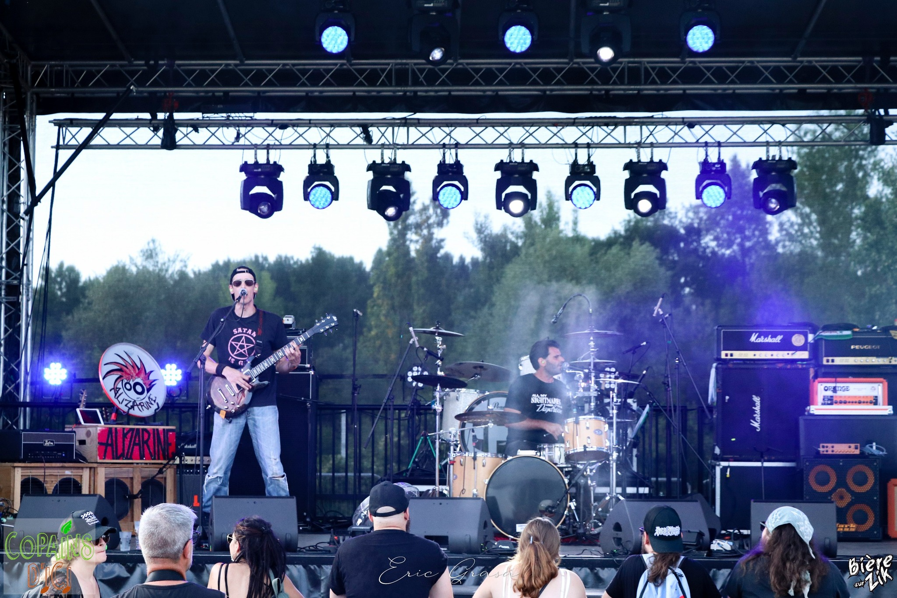
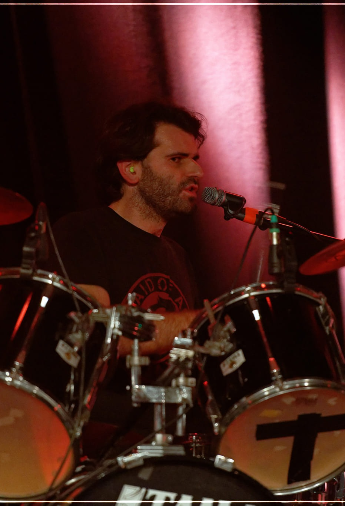
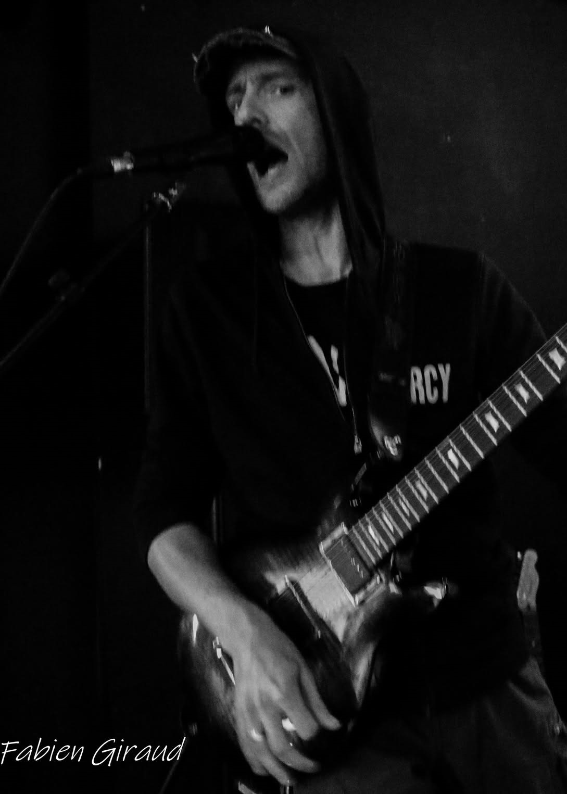
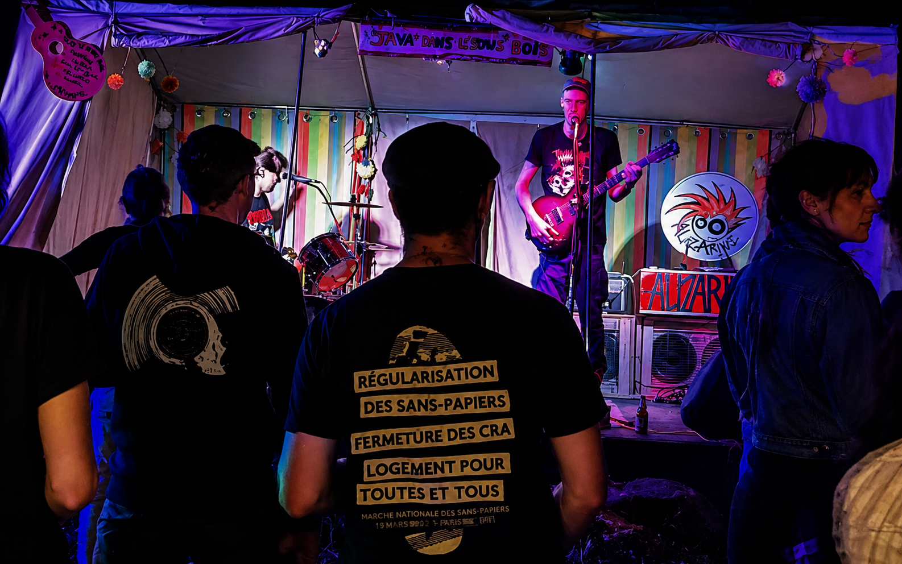

Biographie
Présentation
Alizarine, comme le pigment rouge sang qui imprègne les fleurs de nos champs. Un nom évocateur mais, loin des fleurs et de la poésie, qui symbolise surtout un punk rock brut, un cri de résistance face au monde qui vacille.
Formé en 2021, et issus d'un premier projet commun (Try Again), Val et Max poursuivent aujourd’hui une même volonté : proposer des morceaux sincères, énergiques et engagés; ancrés dans leur époque.
Le duo incarne cette énergie brute et cette quête de révolte qui anime les scènes punks depuis des décennies.

Identité musicale

Le son d’ALIZARINE mélange du punk, du rock durock et du rock alternatif.
Le groupe revendique des inspirations allant de la scène punk française comme Tagada Jones, Darcy ou Guerilla Poubelle,
à des groupes internationaux comme The Exploited, Get the Shot...
"Des textes engagés abordant des thèmes sociaux, humains et politiques"

Live & énergie scénique
Sur scène, ALIZARINE propose un set puissant et direct.
Partage une énergie communicative, pensée pour le live, où la proximité avec le public
est essentielle.
ALIZARINE c'est un duo 100% DIY, autonome et indépendant.
- - Plus de 40 concerts réalisés
- - Présence en festivals avec (entre autres) TAGADA JONES, LES SHERIFF, ELMER FOOD BEAT, BURNING HEADS,...
- - Organisation de L'ALIZA'FEST (festival punk annuel et autonome)
- - Tournées locales et nationales

Discographie
- - Résistance (2023) – premier album - enregistré et mixé en studio
- - C’est la guerre (2025) – second album - enregistré et mixé maison
Ces deux projets marquent l’évolution du groupe vers un son plus affirmé et plus mature,
tout en conservant leur énergie brute initiale.
Il montre aussi la volonté d'apprendre et de grandir en autonomie, pour proposer ce qui ressemble le plus à ALIZARINE.
Projets à venir
En 2026, ALIZARINE entame leur tournée avec plus d'une vingtaine de dates partout en France et à l’étranger, notamment en Pologne. Le groupe continue également de développer ses projets live, composer de nouveaux morceaux, et son réseau de scènes indépendantes.